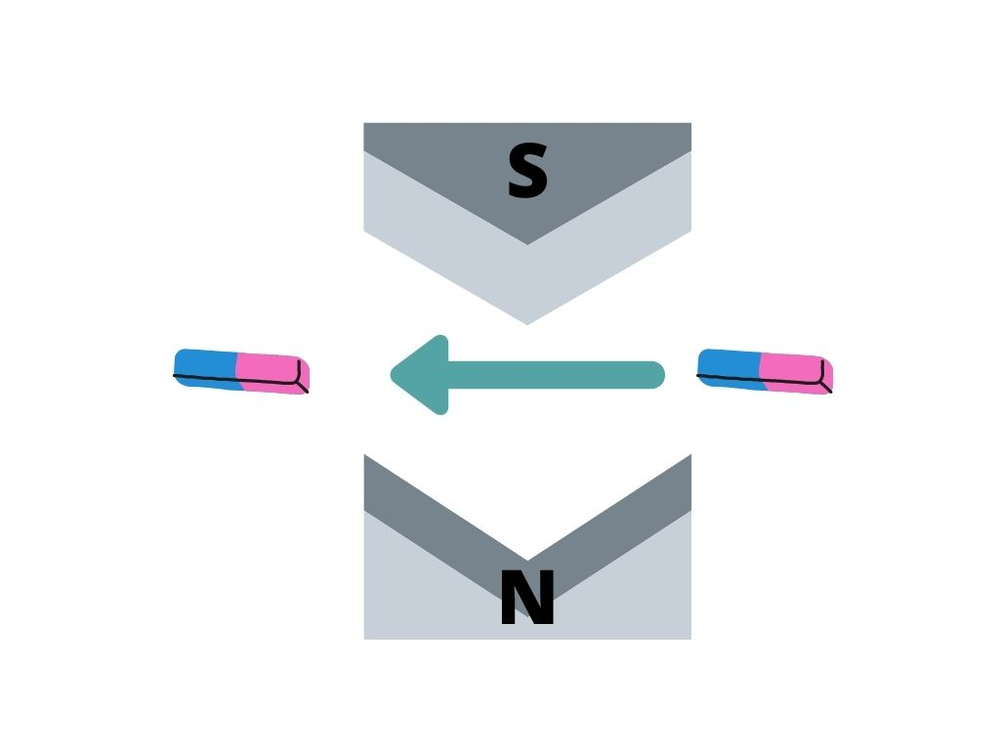

Mecânica Quântica - Parte 1
Origens experimentais: Interferência Quântica, Superposição e Emaranhamento
Sejam bem-vindas e bem-vindos ao primeiro post sobre mecânica quântica!
Vamos estudar esse conteúdo em uma série de três posts, separada em “Origens experimentais”, “Postulados da Mecânica Quântica” e “Relação com a Computação Quântica”. Assim, nosso foco hoje é entender como surgiram os conceitos da mecânica quântica, especificamente como descobrimos a interferência quântica, a superposição e o emaranhamento.
Ok, vamos começar com alguns “disclaimers”: primeiro, saibam que uma série de três posts sobre mecânica quântica não é, de maneira alguma, o suficiente para aprender tudo o que há a aprender sobre o tópico, e nem mesmo o suficiente para arranhar a superfície. No entanto, esperem ter uma introdução divertida e aprender o mínimo necessário para aplicar o conhecimento na computação quântica.
Segundo, sinto que devo lembrá-los que não estou assumindo nenhum conhecimento prévio sobre este ramo da física, e também não assumo nenhuma proficiência com matemática além de álgebra linear. Assim, muitos tópicos aqui podem ser aprofundados caso tenha conhecimento de cálculo e equações diferenciais. Se este é seu caso, não se preocupe: recomendarei recursos mais avançados ao fim do post.
Por fim, vou pedir que você leia este post com a mente aberta. A mecânica quântica tem uma certa reputação como “estranha”, “aleatória” ou até “incompreensível”. Esqueça de todos esses rótulos!!! Apenas leia isso sabendo que a mecânica quântica traz sim algumas noções bastante diferentes daquelas na física clássica, e por isso pode parecer estranha. No entanto, é apenas uma questão de costume. Ela não é, de maneira alguma, incompreensível. Você consegue!
Noções clássicas de ondas e partículas
Antes da mecânica quântica ser descoberta, a noção predominante era a de que partículas têm uma posição definida, são “discretas” (vêm em unidades) e ricocheteiam quando colidem umas com as outras.
Um exemplo de objeto que se comporta como a nossa noção clássica de partícula é uma bolinha de gude. Não temos dificuldade em apontar para sua localização (ou pelo menos para a localização de seu centro). Também é fácil contar quantas bolinhas de gude estão à nossa disposição. Quando colidem, é claro, elas ricocheteiam, cada uma indo para uma direção.
Já as ondas não têm uma posição definida, são contínuas (não há unidades) e interferem umas com as outras ao “colidir”.
Vamos tomar como exemplo ondas de água. Não sei vocês, mas eu não consigo lhes informar a posição de uma onda! Claro, você pode saber a posição de onde ela surgiu ou seguir a posição de uma de suas cristas, mas não tem como estabelecer uma só posição para toda a onda. Por fim, vamos falar sobre o que acontece quando duas ondas de água se encontram (“colidem”). Já tentaram jogar duas pedrinhas no rio, uma do lado da outra? O que acontece é que são geradas duas ondas, e elas se somam ou se cancelam em diferentes posições. Chamamos esse fenômeno de interferência.
Vou aproveitar para retomar alguns conceitos importantes sobre ondas. Chamamos os pontos mais altos de uma onda de cristas e os pontos mais baixos de vales. Além disso, a distância entre duas cristas consecutivas é igual à distância entre dois vales consecutivos, e a chamamos de comprimento de onda. A frequência é inversamente proporcional a esse comprimento (ou seja, quanto maior o comprimento menor a frequência) e diretamente proporcional à energia (alta frequência = alta energia). Pode ser medida como o número de oscilações por segundo ou como a velocidade da luz dividida pelo comprimento de onda. Por fim, a amplitude é também diretamente proporcional à energia. Todas essas características são melhor ilustradas pelo esquema:
Com isso, podemos entender como ocorre a interferência! Quando duas cristas se encontram, formam uma crista maior, e quando dois vales se encontram, formam um vale maior. Já quando um vale encontra uma crista, eles se cancelam:
O experimento de dupla-fenda, o efeito fotoelétrico e a dualidade onda-partícula
Tudo o que falamos até agora se refere à noções clássicas (pré mecânica quântica). Agora, vamos começar a entender como essas ideias passam a ser desafiadas experimentalmente para indicar a necessidade de uma nova teoria.
Por muito tempo, se debateu sobre a natureza da luz: a luz é formada de ondas, ou de partículas?
Para responder a esta pergunta, vamos realizar dois experimentos mentais. Primeiramente, imagine que temos um laser de luz de cor única. Na frente dessa fonte temos uma parede com duas finas fendas. Por fim, colocamos uma parede normal após as fendas.
O que acontece se ligarmos o laser? Antes de saber o que acontece experimentalmente, vamos pensar no que aconteceria se a luz agisse de acordo com nossas noções clássicas de partículas e ondas, respectivamente.
Se a luz fosse feita de objetos agindo de acordo com nossa noção clássica de partículas, seria como imaginar várias bolinhas de gude viajando em direções aleatórias, mas elas seriam muito mais rápidas e leves que bolinhas de gude (na verdade, sem massa, mas comento mais depois). Bom, então esperaríamos ver algo mais ou menos assim:
E se a luz fosse composta de ondas? Bom, existe algo que não mencionei sobre ondas clássicas: quando atingem uma fenda, agem como se formassem novas ondas a partir daquele ponto (como se a fenda se tornasse uma fonte de ondas). Assim, duas fendas gerariam duas frentes de ondas, e quando elas se encontrassem resultariam em um padrão de interferência:
Ok. Quero que pause aqui e tente adivinhar qual é o resultado experimental.
Pausou? Fez sua hipótese?
…
E o resultado é… a segunda opção!
Ah, então tudo certo, né? A luz é feita de ondas, está decidido. Veremos…
Dupla-fenda alterada
Vamos alterar nosso experimento um pouquinho. O que acontece se adicionarmos uma câmera entre o laser e as fendas?
Tente adivinhar. Ainda temos interferência?
Não. Agora que estamos tentando olhar para a luz (“medí-la”), ela decide agir como se fosse feita de partículas! O resultado passa a ser as duas linhas retas esperadas para partículas passando pelas fendas.
Como assim? O que está acontecendo? Na verdade, ninguém sabe. Com isso não quero dizer que não tenhamos uma teoria que inclua esse comportamento estranho quando observamos a luz e que traga resultados extremamente bem testados quando comparados a resultados experimentais - temos sim, e se trata da mecânica quântica. O que quero dizer é que não sabemos explicar porquê a luz - e, como veremos, outras ondas/partículas - exibe este comportamento. Em outras palavras, o que exatamente ocorre durante uma medição/observação? Não sabemos, e isso é, na física, conhecido como o problema de medição. Para mais informações, recomendo assistir à explicação de Sabine Hossenfelder no vídeo Understanding Quantum Mechanics #5: Decoherence.
Dito isso, vamos continuar.
Outro exemplo de comportamento de partícula da luz
Ok, então já sabemos que a luz se comporta como uma onda quando ninguém está vendo mas passa a agir como uma partícula quando tentamos observá-la. Estranho, mas os experimentos não mentem.
Existe mais uma situação interessante na qual a luz mostra sua “personalidade ] partícula” (ela tem duas caras, fazer o quê): no efeito fotoelétrico.
Imagine que tenhamos um átomo, do qual queremos retirar um ou mais elétrons. Um átomo é composto de um núcleo de carga positiva e uma eletrosfera de carga negativa, então retirar um elétron requer vencer sua atração ao núcleo. Assim, isso exige energia.
Bom, a luz tem energia! Não importa se por enquanto que não sabemos exatamente o que a luz é, pensemos sobre ela como uma onda ou uma partícula: tanto ondas quanto partículas possuem energia. Ok. Mas existe uma diferença entre o resultado de tentar retirar elétrons do átomo com luz se ela se comportar como partículas comparado ao resultado que ocorre se se comportar como ondas. Vamos entender a diferença:
Se a luz se comportar como partículas nesse cenário (não digo se a luz for composta de partículas pois já vimos que depende do momento; lembrem: ela tem duas faces), então precisamos usar a luz com a energia certa para retirar um dado elétron. Se um dado elétron precisa de dada energia para ser retirado de sua posição confortável no átomo, não importa quantas partículas de energia menor que a necessária você jogue nele - ele não vai sair. Seria como tentar derrubar um canhão com várias bolinhas de gude.
Se a luz se comportar como ondas nesse cenário, então poderíamos usar luz de qualquer energia para retirar o elétron, desde que usássemos a quantidade suficiente. Afinal, uma onda é contínua: é como se a energia aplicada fosse se acumulando.
E desta vez, qual o resultado?
Forme uma hipótese (não deve ser muito difícil, considerando o título da seção)
...
Dessa vez, a primeira opção é o resultado observado! Mais uma situação na qual a luz decide se comportar como partícula!
Dualidade onda-partícula, outra dupla-fenda alterada e o comprimento de onda de De Broglie
Uau, isso está se tornando uma confusão. A luz uma hora é partícula, outra hora é onda, muda de ideia de novo e vira partícula…
Vamos nos organizar. Já sabemos que objetos podem se comportar como partículas e ondas ao mesmo tempo. Até agora, só vimos isso acontecer com a luz, sobre a qual a maior parte das pessoas pensa como sendo uma onda. Mas também vale para todas as outras partículas fundamentais! Se alteramos a fonte da nossa dupla fenda de um laser para uma fonte de elétrons, e não temos a câmera entre a fonte e as fendas, vemos um padrão de interferência como o observado com a luz!
Ok, imagino que isso seja o suficiente para lhe convencer de que essa dupla personalidade se aplica a qualquer coisa pequena. Chamamos essa dupla personalidade de dualidade onda-partícula.
Se tudo o que considerávamos serem partículas (átomos, elétrons, prótons, etc) pode se comportar como ondas, então devem ter aquelas características básicas de ondas que vimos antes, incluindo um comprimento de onda. Para uma partícula de massa m e velocidade v, o comprimento de onda correspondente é
λ = h/(mv) = h/p
Chamado de comprimento de onda de De Broglie. Mas o que exatamente acontece quando uma partícula se comporta como uma onda? Uma onda está em vários lugares ao mesmo tempo (lembrem-se, ondas são contínuas), mas como, então, ela pode voltar a agir como uma partícula quando observada? Como escolhe uma única posição?
Função de onda, operador Hamiltoniano e equação de Schrodinger
Acontece que todos os objetos quânticos são descritos por uma função de onda. Já vamos entender porque a palavra “função” está neste nome, mas antes vamos entender o que ela representa.
Bom, vamos mudar nossa atenção para um experimento bem menos realístico, apenas mental. Imaginemos um só elétron. Ele se comporta como uma onda quando ninguém está vendo, mas passa a agir como uma partícula ao ser medido. Uma onda não tem posição definida, como vimos. Então, a pergunta volta: que posição ele escolhe ao ser medido?
Se conseguíssemos realizar este experimento, veríamos que… depende da vez! Como assim? Bom, se repetimos o experimento, vemos que o elétron escolhe diferentes posições a cada vez. Se repetimos o experimento um número suficiente de vezes, passamos a ver padrões: algumas posições são escolhidas com mais frequência, outras quase nunca. E é isso que a tal da função de onda representa! É uma onda de probabilidade!
Especificamente, os pontos de maior amplitude na função de onda de uma partícula correspondem às suas posições mais prováveis:
Ok, como prometido, vamos entender o significado do nome “função de onda”. Não escolhemos o termo função aleatoriamente! Pense assim: temos uma onda que nos fornece as probabilidade de cada posição para uma partícula uma vez que for medida. Mas veja que o que essa onda realmente está fazendo é agindo como uma função: ela depende da posição, e retorna uma probabilidade. Além disso, essa onda vai evoluir com o tempo, mudando seu formato e as probabilidades. Assim, se trata de uma função de duas variáveis: x (posição) e t (tempo):
ψ(x,t) = |ψ⟩
Para descrever essa dependência temporal, vamos mudar um pouco de assunto e falar sobre energia. Ondas carregam energia, e estamos lidando com objetos que se comportam um pouco como ondas. No entanto, lembrem-se que também se comportam um pouco como partículas. Assim, nossos estados quânticos carregam energia, mas nem toda energia é permitida. A energia vem em “quanta”, pequenos pacotes. Dizemos que é quantizada, discreta como partículas (que vêm em unidades, como vimos). É daí que vem o termo mecânica quântica!
Ok, e como descobrimos quais energias são permitidas? Usamos algo chamado o operador Hamiltoniano, ou apenas Hamiltoniano. Trata-se de um operador quântico que, quando aplicado ao nosso estado, nos informa sua energia. Matematicamente,
H|ψ⟩ = E|ψ⟩
Essa equação é o que chamamos de uma equação de autovalor. Basicamente, estamos dizendo que o operador Hamiltoniano, uma matriz, multiplicado por nosso estado quântico, um vetor, resulta em um escalar, a energia, vezes esse mesmo estado quântico. Pode existir mais de um resultado, e pode não existir nenhum. Para uma solução psi_0, E_0, dizemos que psi_0 é autovetor de H, e E_0 é o autovalor.
As possíveis soluções para E são as energias permitidas.
Para que essa equação funcione, precisamos que o Hamiltoniano capture as várias formas através das quais um estado quântico pode ter energia. Teremos
H = p²/(2m) + V(x)
Veja que o primeiro termo, aplicado a um estado quântico, nos informa sua energia cinética, enquanto que o segundo termo engloba toda forma de energia potencial que pode ter (é uma função de x, pois energia potencial é energia devido a posição).
Por fim, precisamos de uma ferramenta para descrever a mudança dos estados quânticos. Para isso, utilizamos a equação de Schrodinger:

Se você não sabe cálculo, basta saber que d/dt nos dá a taxa de mudança de algum valor (neste caso, psi). Não vamos precisar explicitamente resolver essa equação, que é uma equação diferencial parcial, mas é bom saber que ela existe e para que serve. Se quiser saber mais, veja os recursos recomendados na última sessão do post.
Definindo interferência quântica e superposição
Lembra que, na introdução a este post, disse que nosso foco seria entender a interferência quântica, a superposição, e o emaranhamento? Bom, nós já estamos prontos para formalizar as duas primeiras noções!
Ondas interferem. Já revisamos isso. Mas também sabemos que objetos quânticos são representados por funções de onda. Tanto que elétrons passando por uma dupla fenda criam um padrão de interferência, como ondas! Então, já sabemos o que é a interferência quântica: a habilidade de objetos quânticos de interferirem uns com os outros como ondas antes de serem observados. Basicamente, expandimos a noção de interferência clássica para todo objeto quântico, incluindo coisas que acreditávamos se comportar apenas como partículas.
E a tal da superposição? Do que se trata? Lembre que as ondas não têm uma posição definida - são contínuas. Se objetos quânticos se comportam como ondas antes de serem medidos, então eles também não têm uma posição definida quando ninguém está olhando! Dizemos que se encontram em uma superposição de diferentes estados - estão em vários lugares ao mesmo tempo.
Isso se estende para além da posição dos objetos, e pode envolver uma superposição de diferentes níveis de energia, uma superposição de diferentes spins, etc. Essas outras propriedades, assim como a posição, saem da superposição quando o objeto é observado. O efeito do observador é o de desfazer a superposição, forçando a partícula a escolher apenas um estado.
Um resumo final dessas duas propriedades: a interferência quântica é a habilidade de objetos quânticos de afetarem uns aos outros como ondas quando ninguém está olhando, e a superposição é sua habilidade de estar em mais de um estado (posição, energia, spin, etc) ao mesmo tempo (de novo, enquanto ninguém está olhando).
Stern-Gerlach
Para entender nossos últimos conceitos de mecânica quântica, vamos introduzir um novo experimento utilizando analisadores Stern-Gerlach.
Já vimos que um objeto quântico pode estar em mais de um estado ao mesmo tempo. Mas, para computação, queremos que existam apenas dois estados possíveis, correspondendo ao 0 e 1. Assim, um bit quântico poderá estar em uma superposição de 0 e 1. Posição claramente não é uma propriedade de dois valores possíveis (um sistema de dois níveis). A energia de um elétron ou outra partícula muitas vezes pode ser, assim como a polarização da luz. Mas vamos focar em outro exemplo: o spin.
Spin é apenas uma propriedade eletromagnética de partículas como o elétron. Como sabemos que há apenas dois possíveis valores para o spin de um elétron? É aí que entra o experimento de Stern-Gerlach.
Imagine que criamos um aparelho usando dois enormes polos magnéticos. Colocamos o polo Norte em baixo e o Sul em cima, sendo que o formato dos polos faz com que o campo magnético gerado seja mais forte próximo ao polo Sul (apontando para cima):
Se enviamos um ímã com polo Norte para cima através deste aparelho, podemos esperar que ele seja desviado para cima. Isso porque a atração do polo Norte do ímã ao polo Sul do aparelho será maior que a atração do polo Sul do ímã ao polo Norte do aparelho (lembre que o campo magnético é mais forte para cima).
Similarmente, se o polo Norte está para baixo, esperamos que seja desviado para baixo. Desta vez, isso se deve a uma repulsão mais forte entre os polos Norte do ímã e do aparelho que a repulsão entre os polos Sul.
E se enviássemos um ímã horizontal? Ele não seria desviado!
Então, podemos imaginar que se enviamos vários ímãs de orientação aleatória através do aparelho, vemos um contínuum de desvios diferentes:
Até agora, estamos lidando com ímãs clássicos: nada quântico ou inesperado aconteceu. Se trocamos nossos ímãs por elétrons, vemos um resultado bastante diferente. Eles sempre são desviados ou para cima ou para baixo, mas nunca têm um desvio intermediário:
Como podemos interpretar isso? Bom, primeiramente perceba que esse experimento indica que o spin de um elétron é um sistema de dois níveis. No entanto, precisamos lembrar que elétrons são objetos quânticos, e, como tal, são afetados pelo ato de observação.
O aparelho de Stern-Gerlach pode não ser uma câmera, mas ele está tentando medir o spin dos elétrons. Assim, podemos inferir que os elétrons podem se encontrar em uma superposição de spins (para baixo e para cima ao mesmo tempo) antes de passar pelo aparelho, mas que o ato de medição os força a escolher apenas uma opção.
Um motivo mais concreto pelo qual podemos inferir isso é que assumimos que enviamos elétrons aleatoriamente (de estados desconhecidos e aleatórios) ao aparelho, e conseguimos exatamente 50% de chances de irem para cima, e 50% de irem para baixo.
Esse é o experimento de Stern-Gerlach! A seguir, vamos falar um pouco mais sobre ele e usá-lo para introduzir o emaranhamento. No entanto, note que o que explicamos aqui é bastante importante: introduzimos uma propriedade quântica que, como todas as outras, permite superposição e interferência, mas que, diferente do que já havíamos mencionado (posição), é um sistema de dois níveis. Garanta que você entende o que isso significa antes de continuar.
Diferentes bases com Stern-Gerlach
O que acontece se, agora, repetimos o experimento de Stern-Gerlach com elétrons, mas rodando nosso aparelho de forma que se alinhe ao eixo x?
Bom, se enviamos vários elétrons através do aparelho novamente, vemos de novo apenas duas possibilidades de desvio: para a esquerda ou para a direita (cada um com 50% de probabilidade), e nada intermediário:
Antes, dizemos que o aparelho estava alinhado ao eixo z. Quando os elétrons vão para cima, dizemos que seu spin foi medido como sendo 0. Quando vão para baixo, seu spin foi medido como sendo 1. Uma vez que um elétron, possivelmente em superposição de spins, tem seu spin medido, não há volta: o spin observado passa a ser o estado do elétron.
Nesse novo eixo x, quando vão para a esquerda dizemos que seu spin é -, e quando vão para a direita seu spin foi medido como sendo +.
E se colocarmos um aparelho de Stern-Gerlach alinhado ao eixo z (SGZ), com uma barreira para os elétrons que saírem com spin 1, seguido de um aparelho de Stern-Gerlach alinhado ao eixo x (SGX), com uma barreira para os elétrons que saírem com spin -, e então outro SGZ?
Bom, se enviamos vários elétrons através do primeiro aparelho, obtemos 0 ou 1 com 50% de probabilidade. Barramos os elétrons de spin 1, então apenas aqueles que foram desviados para cima continuam para o SGX. E então, o que acontece?
Crie sua hipótese sobre o resultado de passar esses elétrons pelo SGX.
Criou?
É possível que sua intuição tenha te enganado um pouco. Às vezes pensamos que se saímos do 0, que é o desvio para o eixo +z, mediremos apenas um desvio para o eixo +x, ou seja, um spin +. No entanto, mudamos de base! A base x não liga para o que ocorreu na base z. Conseguiremos, de novo, 50% e 50% de probabilidade para cada desvio (spin + ou -).
Agora, bloqueamos os elétrons que foram para a esquerda, e apenas aqueles com spin + são enviados pelo último SGZ. Este é o grande ponto de realizar este experimento mental: quais as probabilidades de obter spin 0 ou 1 após esse último aparelho?
Você pode pensar que, como no início bloqueamos todos os elétrons de spin 1 no eixo z, vamos obter spin 0 com 100% de certeza ao fim do experimento. Aliás, é isso que esperaríamos, classicamente falando.
No entanto, já sabemos que a mecânica quântica pode nos enganar desse jeito, sempre contra nossas expectativas. Na verdade, o resultado é de 50% de probabilidade para cada spin! É como se os elétrons não se lembrassem de que tinham spin 0 na base z, porque foram medidos na base x. Eles só “lembram” da última medição realizada neles, então tudo o que eles lembram é que tem spin + no eixo x e portanto podem ter qualquer spin no eixo z.
Isso é estranho. Você pode ter acertado na sua previsão, mas provavelmente porque esqueceu que todos os elétrons que continuaram até o final tinham spin 0 no eixo z inicialmente. Se já conseguiu aceitar que os elétrons têm memória de curto termo, vamos para o último conceito deste post.
Emaranhamento
Estamos quase terminando. A última coisa que precisamos entender é o emaranhamento. Como com a maioria dos conceitos neste post, vamos introduzi-lo com outro experimento.
Suponha que possamos construir uma fonte de elétrons que emite dois elétrons por vez, em direções opostas e com spins opostos em qualquer que seja a base de medição. Em cada lado dessa fonte, colocamos um aparelho SGZ. Se lançarmos os nossos dois elétrons aos seus respectivos aparelhos, sempre vamos obter 0 em um e 1 no outro.
Chamamos esse tipo de estado de estado emaranhado. O motivo é que não importa se esses dois elétrons forem medidos em cantos diferentes do Universo, eles sempre estarão conectados.
Uma maneira ainda mais clara de ver isso é: imagine que, dessa vez, coloquemos um dos aparelhos, digamos que o da esquerda, mais próximo da fonte que o aparelho na direita. Além disso, o aparelho da esquerda é um SGZ e o da direita é um SGX. Se lançamos nossos dois elétrons, o da esquerda será medido antes, e como está sendo medido no eixo z, o outro elétron imediatamente é retirado de qualquer superposição para apresentar o spin oposto no eixo z aquele que foi medido.
Assim, quando o segundo elétron passa pelo SGX, é como se ele já soubesse que o outro foi medido no eixo z e que portanto ele também foi colapsado a um estado de spin no eixo z. Então, ao ser medido no eixo x, terá 50% de probabilidade de ter spin + ou -.
Para aquelas e aqueles que conhecem a relatividade especial e estão confusos quanto a essa conexão instantânea (será que ela viola a teoria de Einstein?), recomendo que esclareçam suas dúvidas no vídeo Understanding Quantum Mechanics #3: Non-locality.
Recursos de aprofundamento
Para aqueles(as) que querem entender melhor a mecânica quântica, incluindo toda a matemática mais avançada, deixo a seguir uma lista de recursos que utilizei e considerei de maior ajuda. Marquei com um asterisco os recursos que exigem conhecimento de cálculo.
- Quantum Mechanics and Path Integrals, Feynman e Hibbs, capítulo 1
- Quantum Mechanics and Path Integrals, Feynman e Hibbs, capítulos 2 a 5*
- Quantum Computation and Quantum Information, Nielsen e Chuang, capítulo 1 parte 2
- Quantum Mechanics for Everyone, curso no edX
- Quantum Mechanics for Scientists and Engineers 1, curso no edX*
- Understanding Quantum Mechanics
- Learn Quantum Mechanics (jogos de aprendizado)
- Quantum Mechanics, Theoretical Minimum
- Feynman Lectures in Physics Volume 3, capítulos 1 a 16 (mas vale a pena ver todos)